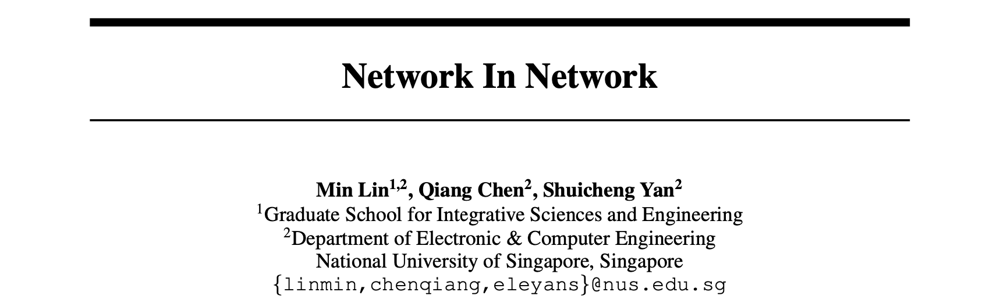
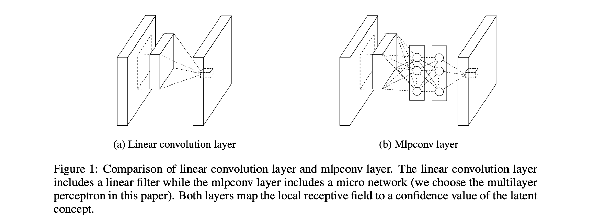
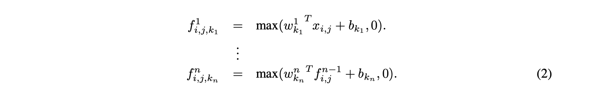
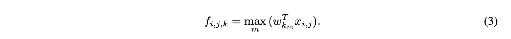
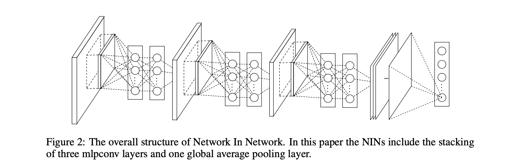
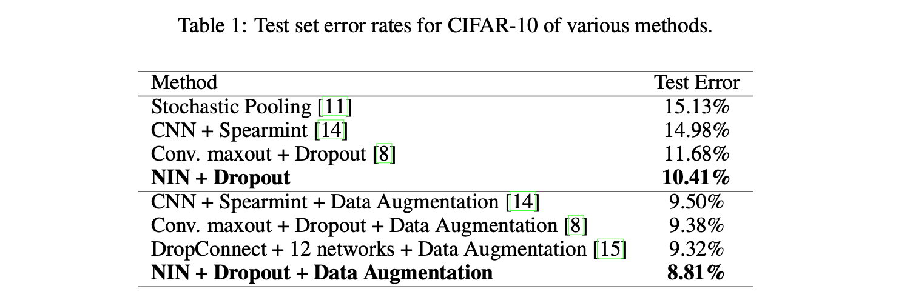
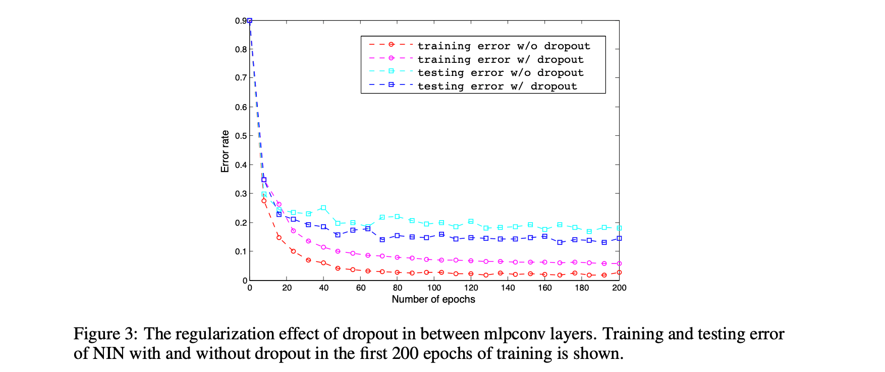
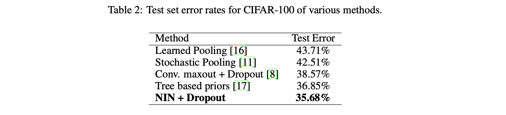
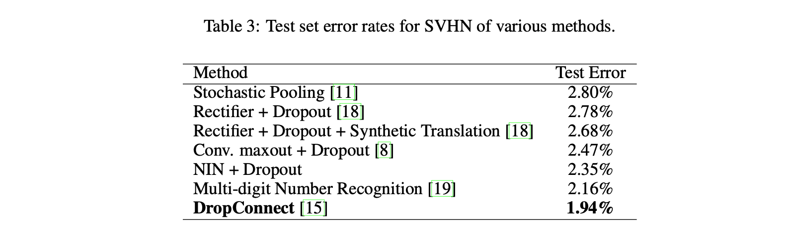
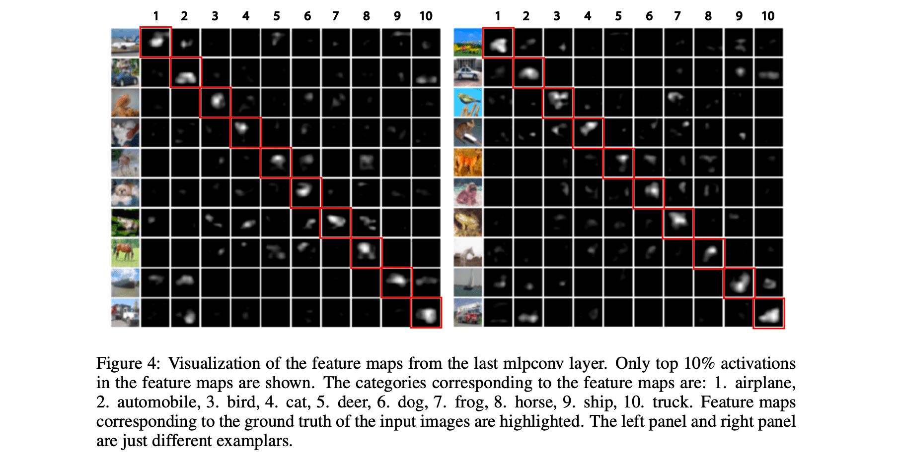

Network In Network 论文阅读
✅ 论文地址：https://arxiv.org/pdf/1312.4400.pdf
✅ 论文发表时间：2014 年

论文提出了一种名为 “Network In Network” (NIN) 的神经网络结构。与传统 CNN 不同的是，NIN 建立了更加复杂的微神经网络来抽象感受野中的数据。
传统 CNN 是通过滑动 Filter 来获取特征图，而 NIN 则是通过滑动一个微小的神经网络来获取，然后传递到下一层。
通过微网络增强局部建模，能够在分类层中利用特征图上的全局平均池化，相比于传统的全连接层的表现力更强，也更不容易过拟合。
NIN 在 CIFAR-10、CIFAR-100、SVHN 和 MNIST 数据集上都取得了不错的性能。
1 Introduction
卷积神经网络（CNNs）由交替的卷积层和池化层组成，卷积是线性滤波器和输入的感受野的內积，在输入的每一个局部部分进行非线性激活函数。由此产生的输出称为特征图（feature maps）。
CNN 中的卷积核是一个 generalized linear model (GLM) ，论文作者认为 GLM 的抽象能力很低，而使用更有力的非线性函数逼近器（nonlinear function approximator）代替 GLM 可以提高局部模型的抽象能力。
GLM can achieve a good extent of abstraction when the samples of the latent concepts are linearly separable, i.e. the variants of the concepts all live on one side of the separation plane defined by the GLM. Thus conventional CNN implicitly makes the assumption that the latent concepts are linearly separable. However, the data for the same concept often live on a nonlinear manifold, therefore the representations that capture these concepts are generally highly nonlinear function of the input.
Xception 也是从 NIN 中获得了启发。
在 NIN 中，GLM 被替换为"微网络"结构，选择多层感知器作为微网络的实例，也是一个可通过反向传播进行训练的神经网络。
NIN 中的结构称之为 mlpconv 层。
mlpconv 使用一个多层感知器（MLP）将输入的局部 patch 映射到输出特征向量，该多层感知器由多个具有非线性激活函数的全连接层组成。
NIN 的整体结构是多个 MLPconv 层的叠加，所以被称为 “Network In Network”（NIN）。
NIN 没有采用传统 CNN 的全连接层进行分类，而是通过全局平均池层（global average pooling layer）直接输出上一个 mlpconv 层的特征图的空间平均值作为类别的置信度，然后将得到的向量送入 softmax 层。
相比于全连接层，全局平均池化（GAP）更有意义和可解释性，GAP 强制要求特征图和类别之间的对应关系，这是由使用微网络的更强的局部建模所实现的。GAP 本身就是一个结构正则化器，这防止了整体结构的过拟合。
2 Convolutional Neural Networks
良好抽象的表示通常是输入数据的高度非线性函数，如果使用传统的 CNN 结构，可能需要一系列的卷积核来提取抽象的特征。使用多个卷积核是一个很多负担。
最近的 Maxout 网络通过在非线性特征图上的最大池化来减少特征图的数量（非线性特征图是不应用激活函数的线性卷积的直接结果），这一改进使得 Maxout 具有更高的性能。
✅ instances of a latent concept 这一名词反复出现，但是我不知道怎么翻译它？
由于 instances of a latent concept，传统的 CNNs 、Maxout 都表现的不好。
当 instances of a latent concept 分布复杂时，Maxout 的表现就不太好。这就需要采用一个更通用的函数逼近器来计算局部 patch 的更抽象的特征。
结构化多层感知器（Structured Multilayer Perceptron，SMLP）将一个共享的多层感知器应用于输入图像的不同 patch 上。NIN 将微观网络集成到 CNN 结构中，对各级特征进行更好的抽象。
3 Network In Network
Network In Network 结构的关键部分：MLP 卷积层和全局平均池化层（MLP convolutional layer and the global averaging pooling layer）。
3.1 MLP Convolution Layers
Given no priors about the distributions of the latent concepts. （传统结构和 maxout 的劣势）
径向基网络（Radial basis network）和多层感知器（multilayer perceptron）是两个著名的通用函数逼近器。
论文使用的是多层感知机：
- 多层感知器与卷积神经网络的结构相适应，它同样采用反向传播进行训练。
- 多层感知器本身可以是一个深度模型，这符合特征重用的思想。
如下图 1 是线性卷积层和 mlpconv 层的区别。

mlpconv 层进行的计算如下：

$n$ 是多层感知器的层数，多层感知器中使用 $ReLU$ 激活函数。
公式 (2) 体现了级联式的跨通道参数池化结构可以实现跨通道信息的复杂和可学习的交互。
跨通道参数池化层相当于 1x1 卷积核的卷积层（只获取通道的相关性，不考虑空间相关性。理解 NIN 的结构）。
**与 maxout 层相比：**maxout 网络中的 maxout 层在多个非线性特征图上进行最大池化。maxout 层的特征图计算如下：

3.2 Global Average Pooling
传统的卷积神经网络在网络的低层进行卷积。对于分类来说，最后一个卷积层的特征图被矢量化，并送入全连接层中，然后是一个 softmax 逻辑回归层（AlexNet/Maxout）。这种结构是卷积结构与传统神经网络分类器的桥梁,它将卷积层视为特征提取器，并以传统方式对产生的特征进行分类。
全连接层容易出现过拟合，从而影响了整个网络的泛化能力。
这篇论文提出了一种称为**全局平均池化（global average pooling）**的策略来取代 CNN 中传统的全连接层。
其思想是在最后一个 mlpconv 层中为分类任务的每个对应类别生成一个特征图，取每个特征图的平均数，所得向量直接送入 softmax 层。
相比于 FC，GAP 的优势：
- 通过强制执行特征图和类别之间的对应关系，更原生地融入卷积结构。因此特征图可以很容易地解释为类别置信图。
- 全局平均池化没有参数需要优化，因此在这一层避免了过拟合。
- 全局平均池化对空间信息进行求和，因此它对输入的空间转换更加稳健。
可以将全局平均池化作为一种结构正则化器，明确地将特征图强制为概念（类别）的置信图。
3.3 Network In Network Structure
NIN 的整体结构是一个 mlpconv 层的堆叠。图 2 显示了一个具有三个 mlpconv 层的 NIN。

4 Experiments
在 CIFAR-10、CIFAR-100、SVHN 和 MNIST 数据集上进行评估。
使用的一个正则化是 Krizhevsky 等人（AlexNet）使用的权重衰减。
4.2 CIFAR-10
8.81% 的测试误差是当下最好的性能。

在实验中发现，在 NIN 的 mlpconv 层之间使用 dropout 可以提高模型的泛化能力，从而提升网络的性能。

4.3 CIFAR-100

4.4 Street View House Numbers
SVHN 数据集由 630,420 张 32x32 彩色图像组成。
NIN 在这个数据集上的测试错误率为 2.35%。

4.5 MNIST
NIN 的错误率为 0.47%，这并不是一个最好的结果。
4.6 Global Average Pooling as a Regularizer
在探讨全局平均池化是否对传统 CNN 具有同样的正则化效果时，实例化了一个 CNN（三个卷积层和一个局部连接层组成）。
在 CIFAR-10 数据集上进行了测试：
- 全连接层的 CNN 模型只能实现 17.56% 的错误率。
- 当加入 dropout 时，错误率为 15.99%。
- 用全局平均池化替换全连接层，得到的错误率为 16.46%。
全局平均池化比 dropout 的结果稍差。
4.7 Visualization of NIN
从 CIFAR-10 的训练模型的最后一个 mlpconv 层提取并直接可视化特征图。

可视化再次证明了 NIN 的有效性。它是通过使用 mlpconv 层进行更强的局部感受野建模来实现的。然后，全局平均池化强制学习类别级特征图。
5 Conclusions
Network In Network (NIN) 由输入进行卷积的 mlpconv 层和全局平均池化层组成。mlpconv 层可以更好地对局部 patch 进行建模，全局平均池化可以防止全局的过拟合。
NIN 在 CIFAR-10、CIFAR-100 和 SVHN 数据集都取得了最好的表现。
通过对特征图的可视化，证明了 NIN 最后一个 mlpconv 层的特征图是类别的置信度图。